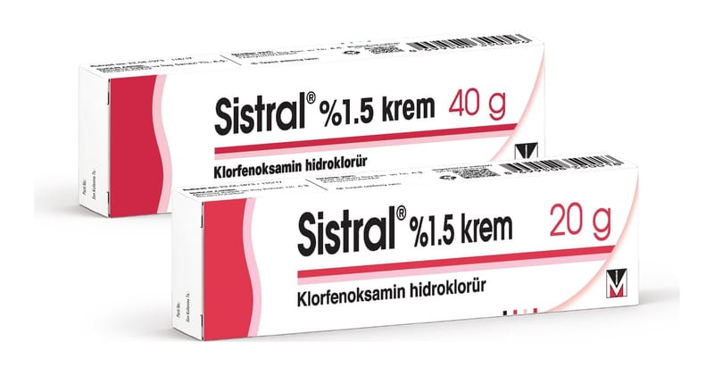

Sistral %1.5 Krem, 40 g

Ne için kullanılır
KT · Bölüm 1SİSTRAL, beyaz veya krem renkli, homojen, hafif parfümlü krem şeklinde bir üründür. SİSTRAL 20 gram ve 40 gram’lık alüminyum tüplerde sunulur. Antihistaminikler denilen ilaç grubuna ait klorfenoksamin hidroklorür maddesini içermektedir. Bu ilaç aşağıdaki alerjik, kaşıntılı deri hastalıklarında, bölgesel olarak cilt yüzeyine uygulanmaktadır:
• Böcek sokmaları, • Ürtiker (kurdeşen) • Egzema, • Güneş yanığı, • Yüzeysel yanıklar, • Deniz anası yanıkları • Donma sonucu oluşan alerjik durum